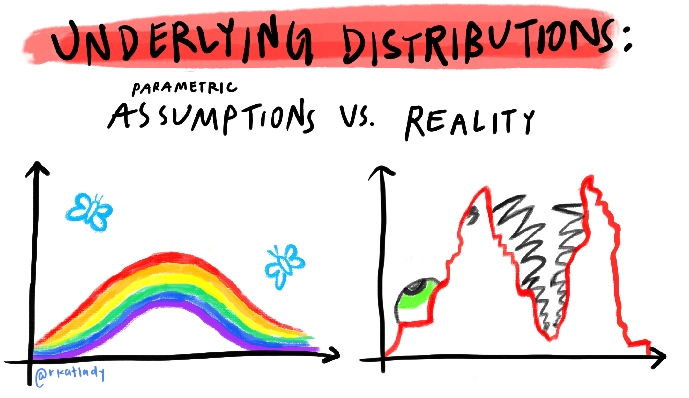

The introductory post of a three-part series to help beginners understand Targeted Maximum Likelihood Estimation (TMLE). This section contains a brief overview of the targeted learning framework and motivation for semiparametric estimation methods for inference, including causal inference.
December 6, 2020
The introductory post of a three-part series to help beginners understand Targeted Maximum Likelihood Estimation (TMLE). This section contains a brief overview of the targeted learning framework and motivation for semiparametric estimation methods for inference, including causal inference.
Table of Contents
This blog post series has three parts:
Part I: Motivation
Part II: Algorithm
Part III: Evaluation
TMLE in three sentences 🎯
Targeted Maximum Likelihood Estimation (TMLE) is a semiparametric estimation framework to estimate a statistical quantity of interest. TMLE allows the use of machine learning (ML) models which place minimal assumptions on the distribution of the data. Unlike estimates normally obtained from ML, the final TMLE estimate will still have valid standard errors for statistical inference.
An Analyst’s Motivation for Learning TMLE 👩🏼💻
When I graduated with my MS in Biostatistics two years ago, I had a mental framework of statistics and data science that I think is pretty common among new graduates. It went like this:
If the goal is inference (e.g., an effect size with a confidence interval), use an interpretable, usually parametric, model and explain what the coefficients and their standard errors mean.
If the goal is prediction, use data-adaptive machine learning algorithms and then look at performance metrics, with the understanding that standard errors, and sometimes even coefficients, no longer exist.
This mentality changed drastically when I started learning about semiparametric estimation methods like TMLE in the context of causal inference. I quickly realized two flaws in this mental framework.
First, I was thinking about inference backwards: I was choosing a model based on my outcome type (binary, continuous, time-to-event, repeated measures) and then interpreting specific coefficients as my estimates of interest. Yet it makes way more sense to first determine the statistical quantity, or estimand, that best answers a scientific question, and then use the method, or estimator, best suited for estimating it. This is the paradigm TMLE is based upon: we want to build an algorithm, or estimator, targeted to an estimand of interest.
Second, I thought flexible, data-adaptive models we commonly classify as statistical and/or machine learning (e.g. LASSO, random forests, gradient boosting, etc.) could only be used for prediction, since they don’t have asymptotic properties for inference (i.e. standard errors). However, certain semiparametric estimation methods like TMLE can actually use these models to obtain a final estimate that is closer to the target quantity than would be obtained using classic parametric models (e.g. linear and logistic regression). This is because machine learning models are generally designed to accommodate large numbers of covariates with complex, non-linear relationships.
The way we use the machine learning estimates in TMLE, surprisingly enough, yields known asymptotic properties of bias and variance – just like we see in parametric maximum likelihood estimation – for our target estimand.
Besides allowing us to compute 95% confidence intervals and p-values for our estimates even after using flexible models, TMLE achieves other beneficial statistical properties, such as double robustness. These are discussed further in Part III.
Is TMLE Causal Inference? 🤔
If you’ve heard about TMLE before, it was likely in the context of causal inference. Although TMLE was developed for causal inference due to its many attractive properties, it cannot be considered causal inference by itself. Causal inference is a two-step process that first requires causal assumptions1 before a statistical estimand can be interpreted causally.
TMLE can be used to estimate various statistical estimands (odds ratio, risk ratio, mean outcome difference, etc.) even when causal assumptions are not met. TMLE is, as its name implies, simply a tool for estimation.
In Part II, I’ll walk step-by-step through a basic version of the TMLE algorithm: estimating the mean difference in outcomes, adjusted for confounders, for a binary outcome and binary treatment. If causal assumptions are met, this is called the Average Treatment Effect (ATE), or the mean difference in outcomes in a world in which everyone had received the treatment compared to a world in which everyone had not.
➡️Continue to Part II: The Algorithm
References
My primary reference for all three posts is Targeted Learning by Mark van der Laan and Sherri Rose. I detail many other resources I’ve used to learn TMLE, semiparametric theory, and causal inference in Part III.
Footnotes
I won’t discuss causal assumptions in these posts, but this is referring to fundamental assumptions in causal inference like consistency, exchangeability, and positivity. A primary motivation for using TMLE and other semiparametric estimation methods for causal inference is that if you’ve already taken the time to carefully evaluate causal assumptions, it does not make sense to then damage an otherwise well-designed analysis by making unrealistic statistical assumptions.↩︎